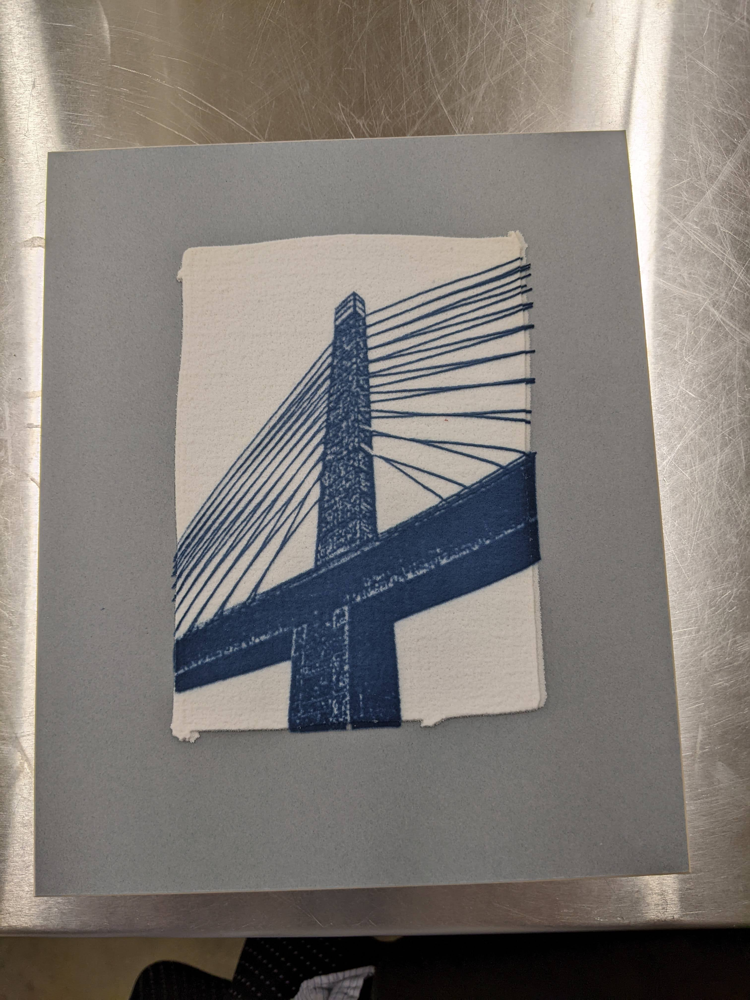
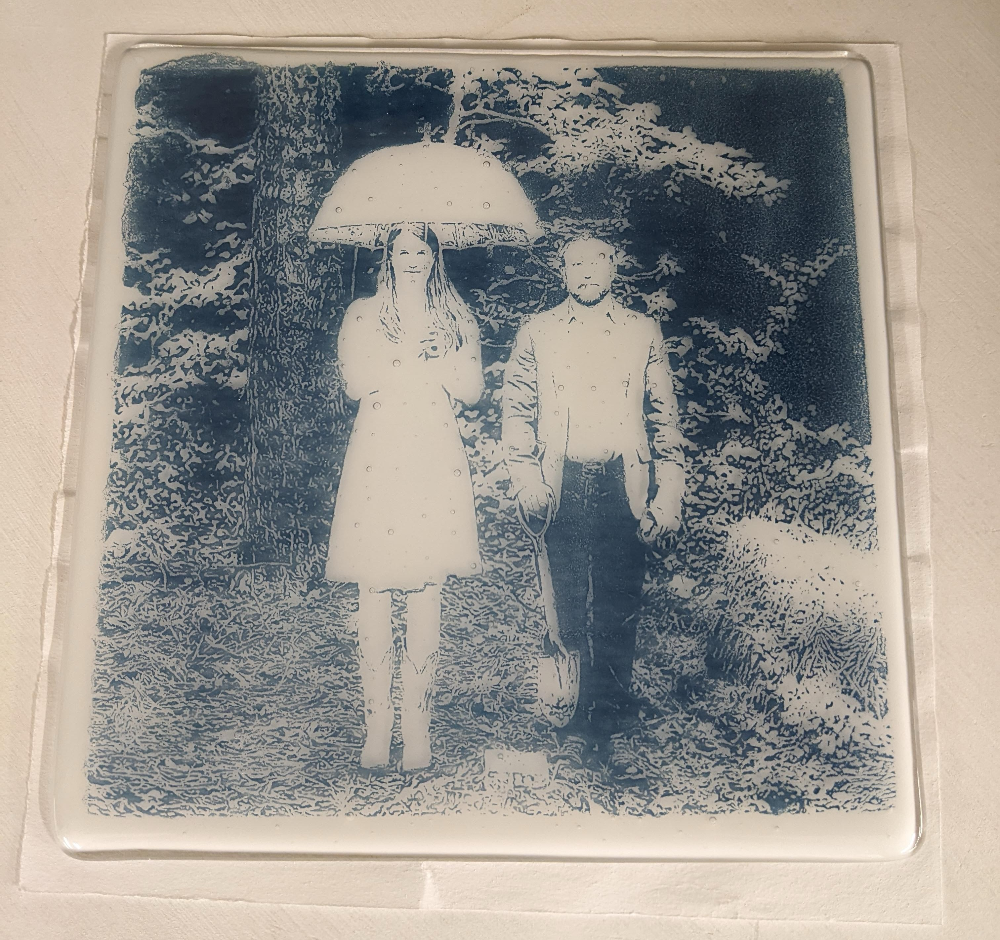
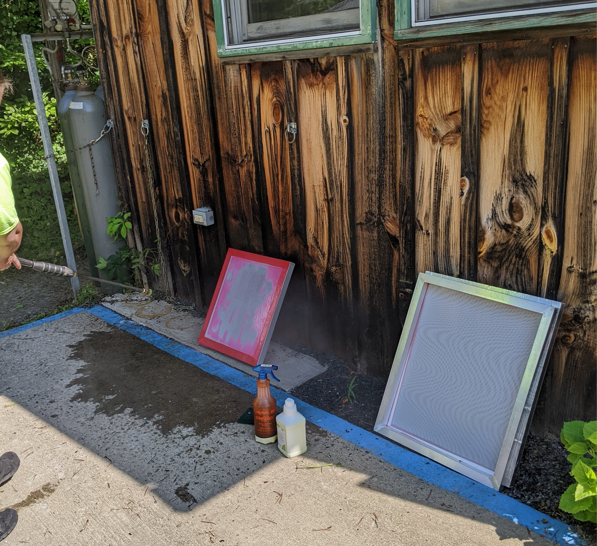

Screen Printing with Glass
by katestudBut like, what?
So there is screen printing...
and also, glass?
Screen printing: a definition
a printing technique where a mesh is used to transfer ink (or dye) onto a substrate, except in areas made impermeable to the ink by a blocking stencil.
source: Wikipedia Source: Pexels
Source: Pexels
Glass: a definition
JK, Let's not define glass.
Glass fusing: a definition
Glass fusing is the joining together of pieces of glass at high temperature, usually in a kiln. This is usually done roughly between 700 °C (1,292 °F) and 820 °C (1,510 °F)...
source: Wikipedia
source: eBay
Screen printing with glass: a definition
Applying screen printing techniques to glass fusing techniques and hoping for the best
An aside: Thank you to the John C. Campbell Folk School in Brasstown, NC, and to instructor Diane Smith for the opportunity to learn this technique!This technique allows you to make something like this:

and this (not complete)

Crash course on screens

Using a screen like that one, you can create something like this!

Making a screen
Make a black and white design!
Print it on some transparency film!
Do some shit in a darkroom (put the film on a screen that's painted with some sort of chemical and expose it to a light to harden the exposed area)
Power wash off the chemical that hasn't hardened!

Using the screen for printing!
Step 1: Put the screen above the glass and put some glass powder on the screen!

Step 2: Scrape the glass powder across the screens so it falls through the mesh and repeat!

Step 3: Look at the layer of glass powder on your glass plate!

Step 4: Put that shit in a kiln!

Step 5: Fire the glass to the correct temperature based on the effect you want.*

Fin.
JK. Because it's glass, we can do so much more! Like cut it up and fire it again!
Let's go back to our weird square with stripes
Let's take this and turn it into a quilt
Cut it into strips!

Cut it into even more strips!

Cut lil' squares off the top of each strip and move em to the bottom!

Fuse another piece of glass on top of it!

Turn it into a bowl by sticking it on a mold and firing it again!


What we learned
Screens are cool and different types of material can be pushed through a screen.
Glass is cool because you can cut it up and fire it a million ways to get a million effects
Why not combine different techniques together to create something "new"?